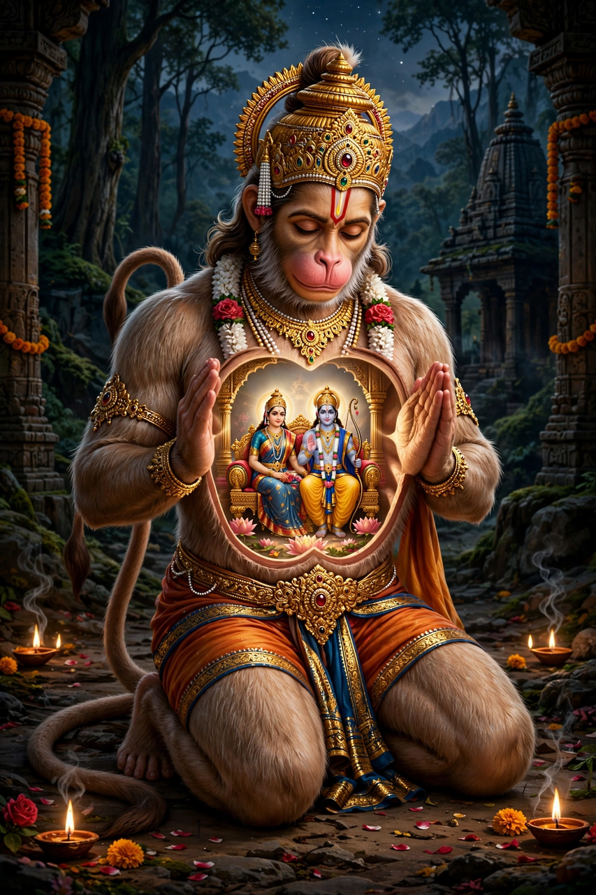

From Wikipedia, the free encyclopedia
| Hanuman | |
|---|---|
| Affiliation | Hinduism; vanara god, supreme devotee of Rama |
| Parents | Kesari and Anjana; blessed by Vayu, the wind god |
| Epic | The Ramayana |
| Attributes | Immense strength; flight; the mace (gada); humility and devotion (bhakti) |
| Festival | Hanuman Jayanti |

Hanuman is a Hindu god and divine vanara (monkey-being), the supreme devotee and companion of Rama in the Ramayana, and one of the most popular deities of Hinduism. Blessed by the wind god Vayu, he can fly, change his size from tiny to mountainous, and lift almost anything; he is the patron of wrestlers, the protector against evil spirits, and in the devotional tradition the very image of selfless service — the servant whose heart, in the beloved image, contains Rama and Sita enthroned.
Hanuman meets Rama in the forest as minister of the exiled monkey king Sugriva, and becomes the hinge of the epic: crossing the ocean to Lanka in one leap, he finds Sita in the Ashoka grove, gives her Rama's ring, lets himself be captured so as to behold Ravana's court, and — his tail set alight — burns Lanka before escaping. In the war he fetches the mountain bearing the healing herb sanjeevani to revive the fallen Lakshmana, carrying the whole peak when he cannot tell the herbs apart, and slays demons in a dozen episodes added by the epic's regional tellings. He is counted among the seven immortals (chiranjivi) who live on in the present age, present wherever Rama's story is sung.
Hanuman temples stand in nearly every Indian town; Tuesdays and Saturdays are his days, and the forty-verse Hanuman Chalisa of Tulsidas is among the most recited hymns in Hinduism. Wrestlers invoke him (his mace is their emblem), travellers carry his image against danger, and in Southeast Asian Ramayana traditions — the Thai Ramakien above all — his role expands with romantic adventures the Sanskrit epic never gave him. In the modern world his image travels from village shrines to the logos of gyms and the dashboards of trucks: strength wholly given to devotion.
Hinduism · Rama · Vishnu · Shiva · Hindu mythology